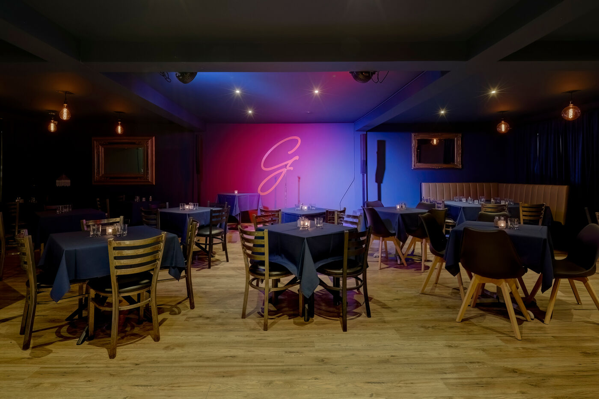
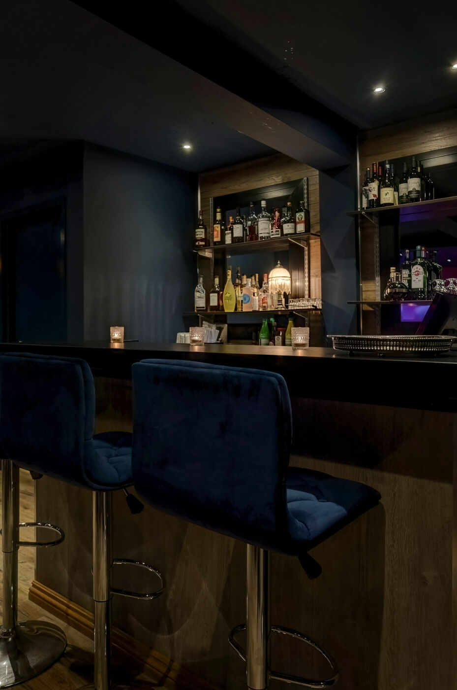
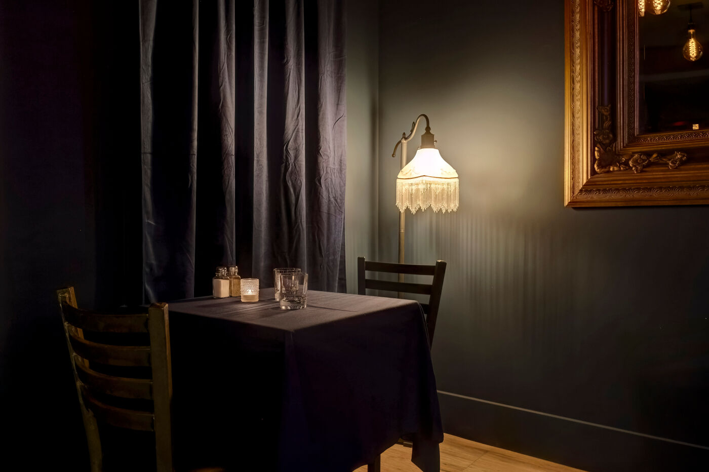
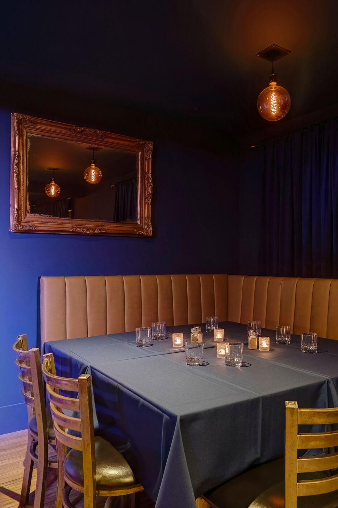
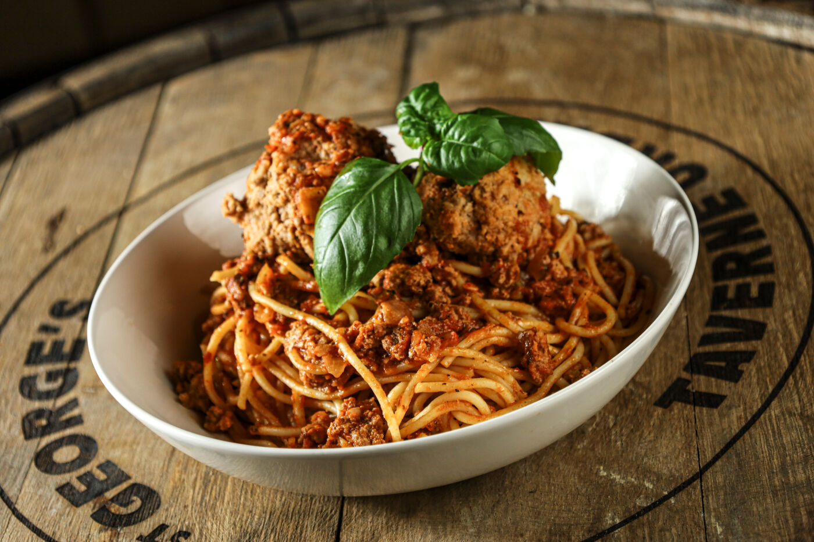

Invités
Une capacité parfaite pour les groupes, sans perdre le côté chaleureux de la soirée.
St George's Taverne Urbaine · 2e étage
Un espace privé et distinctif à Saint‑Jérôme, pensé pour vos événements corporatifs, festifs et rassemblements marquants.
Planifier mon événementLa Salle Point G
Située au deuxième étage, la Salle Point G peut accueillir jusqu’à 70 personnes. Elle offre un cadre intime, élégant et entièrement privé pour célébrer, échanger ou rassembler votre équipe.
Anniversaire, party de bureau, rencontre syndicale, événement corporatif, souper de groupe ou soirée entre amis : nous adaptons la salle à votre occasion.
99, rue Saint‑Georges
Saint‑Jérôme, Québec
Ce qui est inclus
Une capacité parfaite pour les groupes, sans perdre le côté chaleureux de la soirée.
Pour projections, présentations, matchs, montages souvenirs et soirées karaoké.
Un système professionnel adapté aux discours, DJ, musiciens, chansonniers et à votre programmation.
Un bar privé avec une équipe attentionnée pour que vos invités profitent de la soirée.
Du style taverne jusqu’à la fine cuisine italienne, en collaboration avec l’excellent Ristorante Voga.
Une salle modulable pour donner à votre événement l’ambiance qui lui ressemble.
Découvrez l’espace
Une ambiance feutrée, un bar privé et juste ce qu’il faut de caractère pour recevoir autrement.





Réserver la Salle Point G
Indiquez-nous votre date, votre type d’événement et le nombre approximatif d’invités. Nous vous répondrons avec une proposition adaptée.
450 436-6446
reservation@stgeorgestaverne.ca
99, rue Saint‑Georges, Saint‑Jérôme